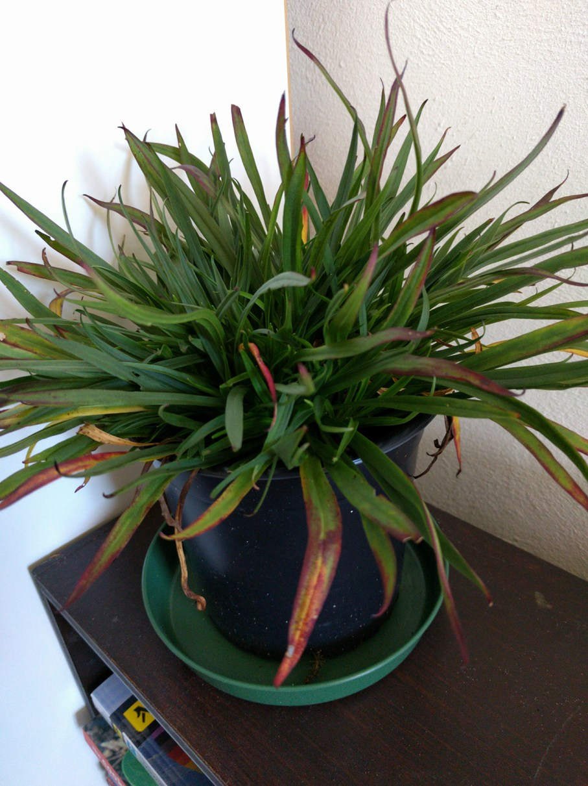

A small herbaceous perennial bearing panicles of dark purple to pinkish-purple flowers on long flower stalks (30-45cm), rising tufts of grass-like foliage (12cm tall). Blooms from late spring to early summer. Cut back old flower stems and fertilize to encourage new growth. Prefers moderately fertile, well-drained soil in full sun to part shade.
